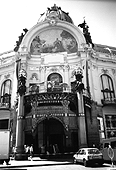
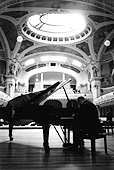
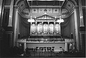
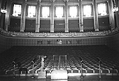
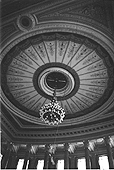
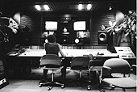
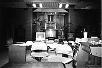

第一日目 1998年6月5日（金）
11:00成田空港
スコアのびっしり詰まったトランクと共にマネージャーの森本さんと久石譲さんが来た。
これから、期待と不安が入り交じりながら「交響組曲 もののけ姫」レコーディングへのためプラハへと旅立つ。今回のレコーディングは、音楽家久石譲さん、マネージャーの森本さん、発売レコード会社徳間ジャパンコミュニケーションズの山本さんそして私スタジオジブリ稲城の以上4名が同行し た。
13：00発JL407便にてフランクフルトへ約12時間の空の旅。6月の東欧は平均気温16℃位と聞いていたが、着いた途端猛暑（33℃）で湿気もかなりある。
19：15発OK539便に乗り継いでプラハへ。（約1時間）
やはり、暑い！長袖しか持ってこなかったのでちょっと暑苦しい。
ゲートを出ると元チェコ大使のご子息ズデニヤク・ハドリチカさんが迎えてくれた。
彼はお相撲さんのような体格でだいの親日家。日本語がめちゃくちゃうまく、しかも柔道2段。びっくり！
ホテル到着後、今回のレコーディングをコーディネイトしてくれたエンジニアの江崎さんとアシスタントの福田さん、村松さんと合流し、スケジュールの打ち合わせをする。
江崎さんは、元チェコ・フィルでトランペットを吹いていた演奏家で今はエンジニア＆レコーディングディレクターとして年に15回位チェコに来ているそうだ。また、チェコの良さを多くの人に知っていただこうと音楽のみならずいろいろな普及活動も行っている人。
チェコが初めての我々にとって何とも頼もしいかぎりだ。
初日の打ち合わせも終わり、出発から約20時間長い一日が終わる。
第二日目 1998年6月6日（土）
今日も猛暑。たまらず、朝一番Tシャツを購入。
11：00より市民会館内にあるスメタナホールにて、久石さんのピアノリハーサルが始まった。
市民会館内は、観光客の見学ルートにもなっていて、土曜日ということもあり少々周りが騒がしいが、スメタナホール（写真：3、4）は、この日貸切なので、リハーサルは、とても良好。このホールは、前説で述べた通り今年5月12日より行われた『プラハの春音楽祭』のオープニングを飾った場所。もちろんオケはチェコフィル。
この模様をほんの3週間前衛星生中継で観ていた私は、実際その場に立つと少々身震いと感動を覚えた。

写真3
写真4
そして、リハーサルとはいえ、その同じステージで久石さんが、ピアノを弾いているのを見ると、またまた感動。
ソロピアノだが、ホールの響きときたら日本のホールでは、絶対に味わえない音質。凄すぎる！
夕方、実際収録する芸術家の家内ドヴォルザーク・ホール（写真：5、6、7）を下見する。
リハーサルをしたスメタナホールは縦長だったが、こちらはややドーム型に近いホール。
収容人員は、バルコニー含め約1200～1300名位だろうか？天井が高く、共鳴度、音場感が広がるすばらしいホール。

写真5
写真6
写真7また、ステージの真下にコントロールルーム（写真：8）と編集ルーム（写真：9）があり、モニターを見ながらダイレクトに録音できる画期的なホールだ。
今回のレコーディングもホールの特性を生かした2chダイレクト録音で行われる。
早く、オケの演奏を聴きたい。

写真8
写真9
| 次のページへ |
| 日誌索引へ戻る |
| 「もののけ姫」トップページへ戻る |